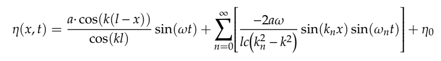
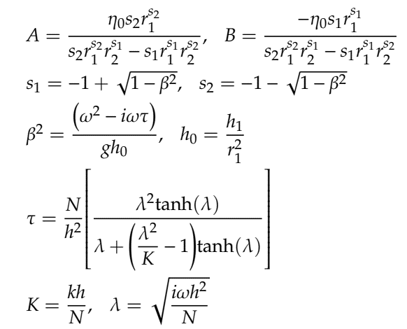

<GOM VALIDATION>
Governing equations, grid systems, numerical schemes, and solution algorithms used in GOM is well interested in the original GOM paper (Lee et al., 2020). These processes may be similar or identical to other models. However, conveying this information into a computer machine language is all different, and we used a standard FORTRAN 90 for this, Even though these processes are well-proven and robust approaches, any mistake in the final coding process leads to failure. To check the final success of this project, we compared a newly developed model, GOM, to well-known analytical solutions.
<WIND SETUP>
If the steady-state wind is applied on a basin, there should be a wind setup at one side and setdown at the opposite side; this test is called the “Wind Setup” test. We tested this wind setup case with a rectangular basin assuming constant wind stress of 0.1 N/m2 (i.e., 1 dyne/cm2). The analytical results of setup and setdown should be 2.04 cm at each side, and the numerical results achieved with GOM are identical to the analytical results. The GOM reaches to the steady-state in one day.

<TIDAL PROPAGATION IN A RECTANGULAR BASIN>
Tide is the most significant phenomenon in the ocean, and thus tidal simulation is one of the most important applications of a coastal and estuarine hydrodynamic model. If a rectangular basin is forced by tide, the analytical solution of the one-dimensional shallow wave equations for water surface elevation is:
A rectangular basin with a constant depth is considered for the tidal propagation test, and the computational domain is discretized with mixed (triangular and quadrilateral) meshes as shown below:

Input tidal forcing along the open boundary was set with 0.5 meter of amplitude and a period of 12.42 hour. The model result with implicitness parameter = 0.5, had a little discrepancy with analytical solutions but mostly agreed well:

<QUARTER ANNULAR HABOR TEST>
Lynch and Gray (1978) derived the analytical solutions for a tidally forced estuary with a flat bottom and a sloping bottom. The quarter-annular test, which contains spatially varying geometry and bathymetry, is one of the well-known test cases for testing the integrated numerical schemes of a developed ocean circulation numerical model. Numerical results will be poor with spurious oscillations or with excessive numerical dissipation if poor numerical schemes are used.
Neglecting nonlinear, Coriolis, and horizontal diffusion terms and assuming linear bottom friction, we can obtain the following analytic solutions for surface elevation:
where

and N is the eddy viscosity; k is the bottom friction.
The tested computational domain consists of a quarter of an annulus enclosed with land boundaries on three sides and an open ocean boundary on the outer edge. Then, the computational domain consists of 48 rectangular cells with 63 nodes (Figure 1).

The model started from a state of rest, and periodic tidal force at the open boundary, advection, and quadratic bottom friction terms are activated. The elevation boundary is forced with a spatially uniform M2 tide (tidal period = 12.42 hrs) with amplitude of 0.3048m (= 1ft). Total simulation time was set to 5 days with a time step of 174.656 seconds. Modeled water level time series are extracted every time step at three different locations in the domain, and the numerical results showed a good agreement with analytical solutions:

<WETTING AND DRYING TEST ON TIDAL FLATS>
To validate the wetting and drying scheme implemented in the GOM, we compared our model results with the analytical solution developed by Carrier and Greenspan (1958). To compare with the analytical solution, a rectangular basin with a linearly sloping bottom is considered. The length and the width of the basin are set to 55 km and 100 m respectively. The water depth at the origin, x = 0 m, is set to 50 m, and the bottom slope is 1:1000; thus, the initial land and water interface is at x = 50 km (Figure 1).

The computational domain is divided by 550 x 1 quadrilateral elements (dx, dy = 100 m). A periodic tide with an amplitude 0.2 m and a period of 1 hr is applied at the open boundary, at x = 0 m. Numerical simulation results show that the analytical and the numerical solutions are in good agreement, showing that the wetting and drying process implemented in GOM works well: